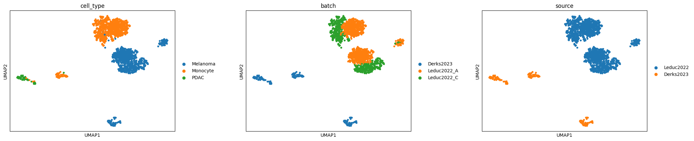
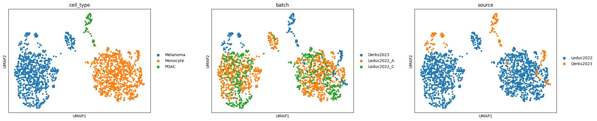

GLANCE: Cross-dataset integration of single-cell proteomics¶
This tutorial demonstrates cross-dataset integration of single-cell mass spectrometry proteomics data with GLANCE, followed by UMAP visualization before and after integration.
The processed data and annotations are available from the Slavov Lab:
References:
Leduc A, Huffman RG, Cantlon J, Khan S, Slavov N. Exploring functional protein covariation across single cells using nPOP. Genome Biology 23, 261 (2022). doi:10.1186/s13059-022-02817-5.
Derks J, Leduc A, Wallmann G, et al. Increasing the throughput of sensitive proteomics by plexDIA. Nature Biotechnology (2022). doi:10.1038/s41587-022-01389-w.
1. Setup¶
The example uses glancevae, scanpy, anndata, pandas, and PyTorch. PyTorch runs on a CUDA GPU when available and otherwise uses the CPU.
import warnings
from tqdm.std import TqdmWarning
# Silence an optional Jupyter progress-bar warning.
warnings.filterwarnings(
"ignore",
message=r"IProgress not found.*",
category=TqdmWarning,
)
import pandas as pd
import torch
import scanpy as sc
import anndata as ad
from pathlib import Path
from glancevae import seed_everything, GLANCE
SEED = 2026
seed_everything(SEED)
sc.settings.seed = SEED
Global seed set to 2026 (deterministic=True)
2. Load and preprocess data¶
Place the downloaded files in ./data/Leduc2022/ and ./data/Derks2023/, as specified below. Each abundance matrix is transposed into cells × proteins orientation.
The datasets use different cell-type labels and batch annotations. These are harmonized before concatenation; only proteins shared by both datasets are retained (join="inner").
# Leduc2022 files
DATASET1_PATH = Path("./data/Leduc2022/")
SC_MATRIX1_PATH = DATASET1_PATH / "t6.csv"
META1_PATH = DATASET1_PATH / "meta.csv"
# Derks2023 files
DATASET2_PATH = Path("./data/Derks2023/")
SC_MATRIX2_PATH = DATASET2_PATH / "Proteins_SC_IDs.txt"
META2_PATH = DATASET2_PATH / "Meta_SingleCell_updated_1.tsv"
Leduc2022¶
Read the abundance matrix and metadata, and harmonize the cell-type labels. Batch IDs retain their Leduc2022-specific prefix.
raw_df1 = pd.read_csv(SC_MATRIX1_PATH, index_col=0)
metadata_df1 = pd.read_csv(META1_PATH, index_col="id")
abundance_df1 = raw_df1.T
cell_ids1 = abundance_df1.index
cell_type_map1 = {
cid: ("Melanoma" if value == "m" else "Monocyte")
for cid, value in metadata_df1["celltype"].items()
}
batch_map1 = {
cid: f"Leduc2022_{value}"
for cid, value in metadata_df1["lcbatch"].items()
}
obs1 = pd.DataFrame(
{
"cell_type": [cell_type_map1[cid] for cid in cell_ids1],
"batch": [batch_map1[cid] for cid in cell_ids1],
},
index=cell_ids1,
)
var1 = pd.DataFrame(index=abundance_df1.columns)
adata1 = ad.AnnData(X=abundance_df1.values, obs=obs1, var=var1)
Derks2023¶
Read the second dataset and harmonize its cell-type labels. The original analysis treats these cells as a single batch (Derks2023).
raw_df2 = pd.read_csv(SC_MATRIX2_PATH, index_col=0, delimiter="\t")
metadata_df2 = pd.read_csv(META2_PATH, index_col="id", delimiter="\t")
abundance_df2 = raw_df2.T
cell_ids2 = abundance_df2.index
cell_type_map2 = {
cid: ("Monocyte" if value[:5] == "U-937" else value)
for cid, value in metadata_df2["Celltype"].items()
}
obs2 = pd.DataFrame(
{
"cell_type": [
cell_type_map2[cid].replace("_t", "").replace("_DB", "")
for cid in cell_ids2
],
"batch": ["Derks2023"] * len(cell_ids2),
},
index=cell_ids2,
)
var2 = pd.DataFrame(index=abundance_df2.columns)
adata2 = ad.AnnData(X=abundance_df2.values, obs=obs2, var=var2)
Combine datasets¶
Concatenate both datasets using their shared proteins, add a source annotation, and scale the abundance matrix.
adata = ad.concat(
[adata1, adata2],
axis=0,
join="inner",
label="source",
keys=["Leduc2022", "Derks2023"],
index_unique="-",
)
sc.pp.scale(adata, max_value=10)
Input abundance visualization¶
UMAP of the scaled input abundance matrix (adata.X), colored by cell type, batch, and dataset source.
sc.pp.neighbors(adata, use_rep="X")
sc.tl.umap(adata)
sc.pl.umap(
adata,
color=["cell_type", "batch", "source"],
wspace=0.3,
)

3. Integrate cells with GLANCE¶
Fit GLANCE using the batch annotation. The integrated representation is stored in adata.obsm["GLANCE"].
device = torch.device("cuda:0" if torch.cuda.is_available() else "cpu")
model = GLANCE(adata=adata, label_col="batch", random_state=SEED, device=device)
model.prepare_local_manifold()
model.prepare_geom_refinement()
model.fit_transform()
[GLANCE] Local manifold graph built | cells=1707, batches=3, k_pos=10, n_neg=20, far_quantile=0.70 | pos_edges=17070, neg_edges=34140
[GLANCE] Geometric refinement registered | start_epoch=2000, k_pos=10, n_neg=20, far_quantile=0.95, mutual=True, rebuild_every=None
[GLANCE] Ensemble: 1/3: 100%|█████| 2500/2500 [00:29<00:00, 83.98it/s]
[GLANCE] Training complete | Geometric edges: pos_edges=9886, neg_edges=34140
[GLANCE] Same-batch pos-edge fraction: 0.867 (random baseline: 0.333)
[GLANCE] Ensemble: 2/3: 100%|█████| 2500/2500 [00:30<00:00, 81.62it/s]
[GLANCE] Training complete | Geometric edges: pos_edges=9608, neg_edges=34140
[GLANCE] Same-batch pos-edge fraction: 0.832 (random baseline: 0.333)
[GLANCE] Ensemble: 3/3: 100%|█████| 2500/2500 [00:29<00:00, 83.94it/s]
[GLANCE] Training complete | Geometric edges: pos_edges=9886, neg_edges=34140
[GLANCE] Same-batch pos-edge fraction: 0.839 (random baseline: 0.333)
sc.pp.neighbors(adata, use_rep="GLANCE")
sc.tl.umap(adata)
sc.pl.umap(
adata,
color=["cell_type", "batch", "source"],
wspace=0.3,
)
